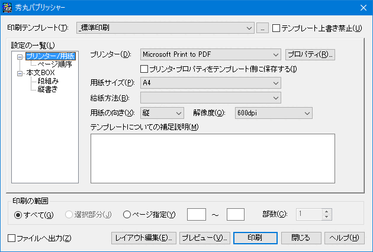
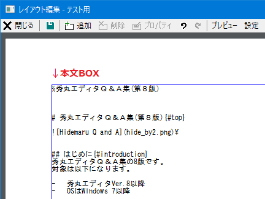
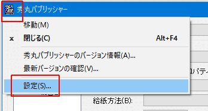

秀丸エディタにもデフォルトで印刷機能がついていますが、あまり機能は多くありません。
秀丸パブリッシャーを使う事で、
等が可能になります。
秀丸パブリッシャーは、
の2種類が存在します。
「64bit版」とありますが 32bit版秀丸エディタ でも使用可能で、 Windows Vista 以降は、32bit/64bit 秀丸エディタを問わずに、.NET Framework で作成した「64bit版」を使用する事を推奨しています。
以降の説明は、「64bit版」を前提にしています。
秀丸パブリッシャーは、以下の場所から入手可能です。
秀まるおのホームページ - ソフトウェア - 秀丸パブリッシャー
2017/09/13 現在、以下のバージョンが公開されています。
秀丸パブリッシャー自体は、フリーソフトウェアです。秀丸エディタ Ver.8.00 以上で使用する事が推奨されています。
ダウンロードしたファイルを実行するとインストール先を聞かれます。
インストールが完了すると、秀丸エディタ本体の設定を変えるようメッセージが表示されるので、 設定変更を行いましょう。


設定が多いですが、普通に印刷するだけなら、以下の2箇所を設定・確認後、 印刷範囲、印刷部数を確認し、「印刷」ボタンを押すだけです。
(デフォルトでテンプレートは「_標準印刷」が選択されています。)
「設定の一覧」にある「プリンタ/用紙」を選択し、使用するプリンターと用紙サイズを確認・設定。

「設定の一覧」にある「本文BOX」を選択し、余白やフォント、フォントサイズ、カラー印刷など設定。
行番号や、ファイル名の印刷なども「本文BOX」の設定で可能です。

注意
「余白」等で数値を入力可能な箇所がありますが、キーボードから直接数値を入力して「Enter」を押すと、 印刷が始まってしまいます。(IMEがOFFの場合。)
これは、デフォルトのボタンが「印刷」に設定されているからです。 項目を移動するつもりで「Enter」を押してしまうと、印刷が始まってしまうので注意してください。
ファイル名の表示や、ページ番号の印刷も「本文BOX」の設定で可能ですが、
等の場合は、テンプレートを編集する事で可能になります。
秀丸パブリッシャーで印刷を行うには、「テンプレート」を作成し指定する必要があります。 Wordなど、ワープロソフトと違い、印刷対象のファイル内に印刷設定を保存する事ができないため、 印刷するテキストと、印刷設定を記録する「テンプレート」は別のファイルになります。
つまり指定されたテンプレートに合わせ、本文を印刷する事になります。 テンプレートは「_標準印刷」の他、サンプルがいくつか添付されています。
「テンプレート」には、用紙内に「BOX」という印刷エリアを配置し、設定する必要があります。
「BOX」は通常の「BOX」と「本文BOX」の2種類あり、配置は「レイアウト編集」で行います。
「テンプレート」には、「本文BOX」がデフォルトで配置され、削除はできません。 「本文BOX」は印刷を実行するファイルの内容が挿入される場所なので、必ず1個必要になります。 (新規でテンプレートを作成すると、「本文BOX」がデフォルトで配置されます。)
通常の「BOX」には、記述した内容が、そのまま表示/印刷されます。 ワープロでいうところの、ヘッダー/フッターのような使い方になります。 ページ番号や、ファイル名、フルパスなどが設定できます。
では、テンプレートを実際に作成・編集してみましょう。
テンプレート名が表示されている箇所の横にある、“…” ボタンを押して、テンプレートの一覧画面を表示させます。

この画面で、テンプレート新規作成、コピー、削除等が可能です。 今回は“_標準印刷”をコピーして、“テスト用”という名前でテスト用のテンプレートを作り、編集していきます。

テンプレートは、用紙の上から順番に
という構成で作成します。
まずは、用紙と、余白を設定してください。 (「設定の一覧」にある「本文BOX」の余白の設定とそこに表示されている、高さと幅を記録しておいてください。)
「レイアウト編集」ボタンを押すと、編集画面が開きます。 初期状態では、マージンいっぱいまで、本文BOX が配置されているだけです。
他のBOXを配置するために、本文ボックスの高さを適当に変えて、BOXを配置する場所を作ります。 BOXは、重ねる事が可能なので、ずらさないと印刷時に重なってします。

ファイル名表示用のBOXを追加します。 編集画面のツールバー、または余白部分の右クリックメニューから「BOXの新規追加」を選択し、 「BOXを新規に追加する」を選択し「OK」を押すと、レイアウト編集画面にBOXが追加されます。


BOXを選択しダブルクリックすると、BOXのプロパティが開き、フォントや表示する内容などを設定する事ができます。 プロパティ画面の設定に関しての詳細は「ヘルプ」を参照の事。
今回はファイル名を表示するので、「テキスト」の「属性」を「ファイル名(フルパス)」にし、 フォントやサイズ、スタイルは、好みにあわせて設定を行います。

設定後、「適用」ボタンを押すと、設定内容に合わせBOXの表示が変わるので、設定内容の確認ができます。
BOXの位置ですが、「サイズ」で値の指定が可能ですが、マウスを使用し、BOX自体を動かす事で配置を決める事ができます。 しっかりと指定したい場合は、事前にメモしておいた、余白、高さ、幅から計算して入力してください。
同様に、ファイルの作成日時、印刷日時、ページ番号用のBOXを追加していきます。
「テキスト」の「属性」をそれぞれ「タイムスタンプ」、「時間」、「ページ番号」に設定してください。
ここでレイアウト編集画面を閉じ、プレビューで確認を行います。
“ファイルの作成日時”と“印刷日時”を追加しましたが、ぱっと見でどちらが何の日時なのかわかりません。

そこで、各日時の前に“ファイル作成日：”と“印刷日時：”という文字を追加します。

追加する方法は、いくつかあります。
BOXのプロパティにある、テキストの「属性」はそのままで、「書式」を変更する。
変更前の属性 YYYY年MM月DD日（W曜日）hh:mm:ss
変更後の属性 ファイル作成日：YYYY年MM月DD日（W曜日）hh:mm:ssBOXのプロパティにある、テキストの「属性」を「通常テキスト」にし、「テキスト」を変更する。
変更前のテキスト
変更後のテキスト ファイル作成日：%timestamp%こちらの方法でも、デフォルトの書式が使われるのようです。
BOXテキストの内容ですが、属性を設定しても、実際は以下のテキストが設定されます。
(レイアウト編集画面ではわかりませんが、メイン画面-設定の一覧にあるBOXの設定画面で確認できます。)

| 属性名 | 設定されるテキスト |
|---|---|
| ファイル名（フルパス） | filename |
| ファイル名 | basename |
| ディレクトリ名 | directory |
| ページ番号 | pagenum |
| 時間 | date |
| タイムスタンプ | timestamp |
その為、テキストの内容が、上記属性と一致してしまうと、その内容が表示されてしまいます。 (大文字小文字は無視、前後の空白も無視されるので、FileName 等でも一致してしまいます。)
逆に、テキスト中に属性の内容を取り込みたい場合は、%で囲ってください。(例:%filename%)
後は実際に印刷して結果を確認し、 修正箇所があれば、再度テンプレートを修正してください。
以上、簡単ですがテンプレート作成例です。 今回、本文BOXは1個でしたが、2個にして、冊子印刷も可能です。 詳細は秀丸パブリッシャーのヘルプを参照してください。
テンプレートファイルですが、一時的な設定のつもりで設定を変えてしまうと、 その設定が保存されてしまいます。
(例えば、フォントの設定等)
印刷 → 印刷ダイアログ開く → 一時的なつもりでフォントを変更 → 印刷実行という作業を行うと、変更内容はテンプレートに保存されます。
設定変更を行っても、テンプレートに保存しないようにするには、 「テンプレート上書き禁止」をチェックしてください。

現状、BOXではUnicode特有の文字を指定できません。Shift_JISに含まれる文字のみ表示可能です。
ただし、「属性」をファイル名にした場合(フルパスも含む)は、 ファイル名にUnicode特有の文字があっても正常に表示されます。
テンプレートの保存場所は、「秀丸パブリッシャー」のダイアログから確認できます。
「印刷」を実行し、秀丸パブリッシャーのダイアログを表示させます。 アイアログ左上のアイコン部分をクリックすると、メニューが表示されるので「設定」を選択します。

「印刷テンプレートの設定」ダイアログが表示され、テンプレートを保存してあるフォルダが表示されます。

テンプレートをバックアップする場合は、このフォルダを保存するようにしてください。